Book Design, 2024.
Compression Test: Save For Web, Resample, Hexcode
We perceive images through different ways. Colors, shapes… All the visual elements that shape how we see an image are information that enters our sight. Through the process of lossy compression, the size of the images changes accordingly. This project is aiming to test the boundaries between the visual content and its digital form.
A series of 3 books, 4' x 5'.

 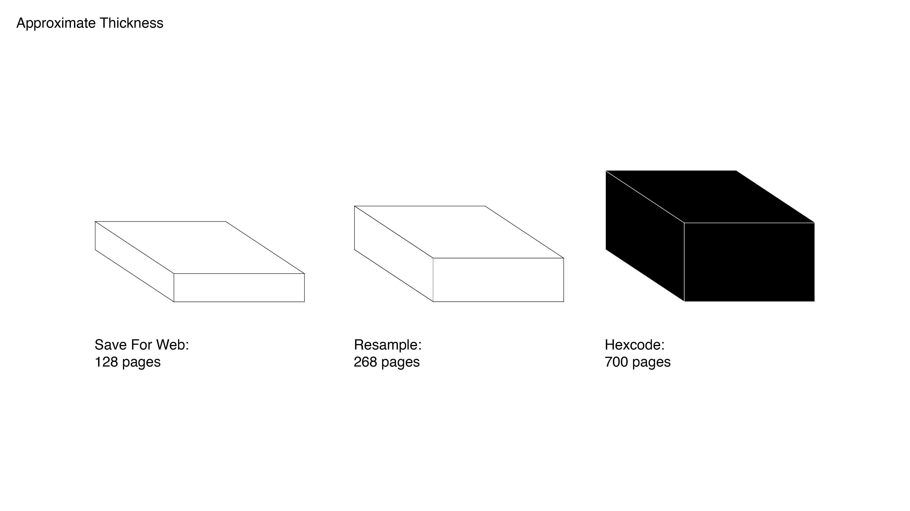
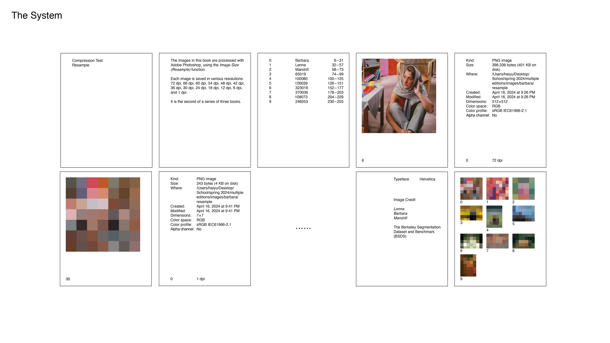
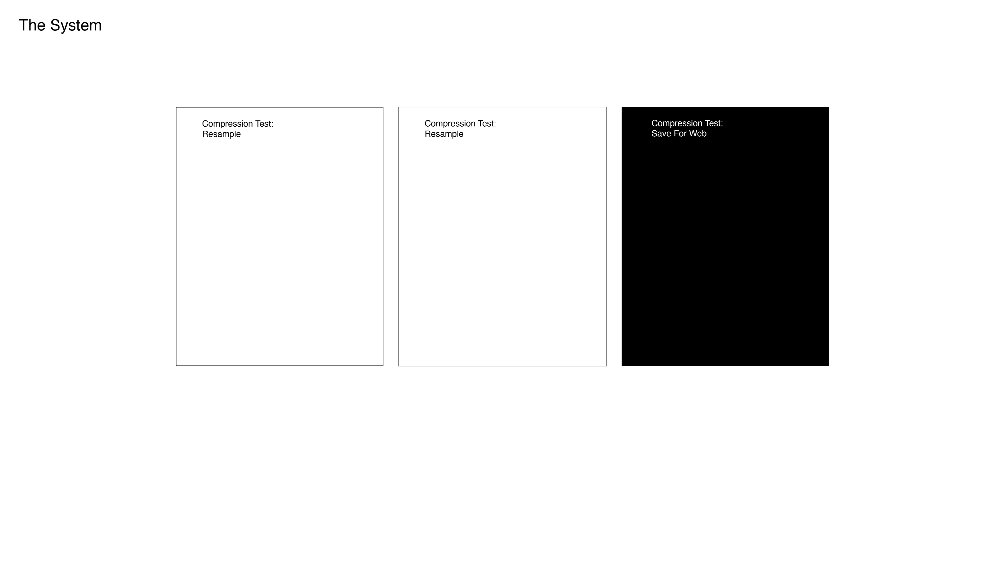
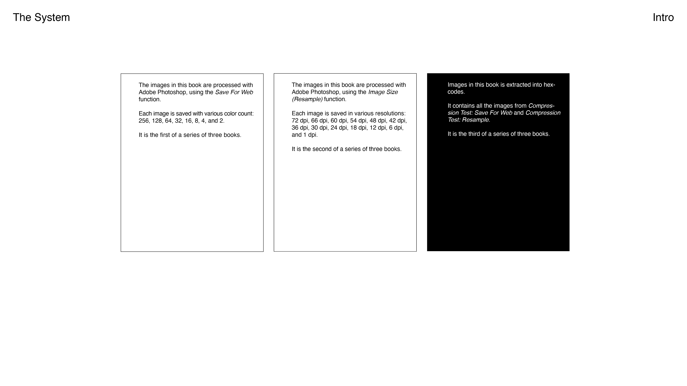
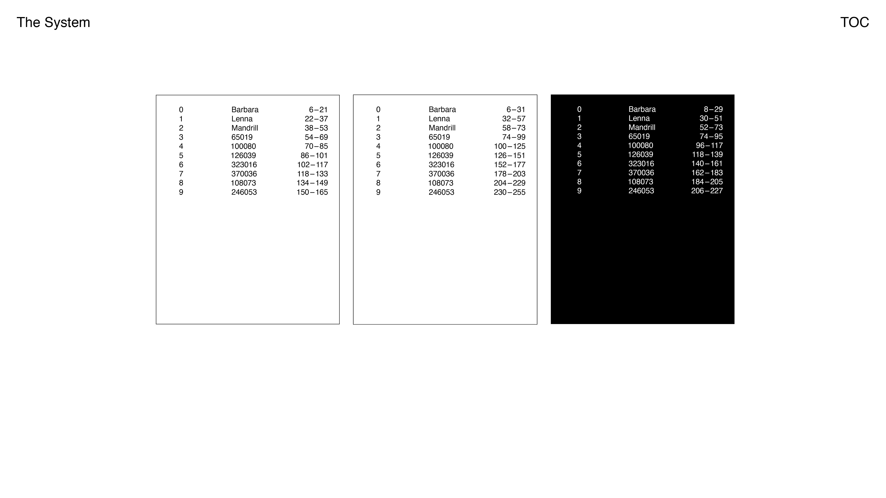
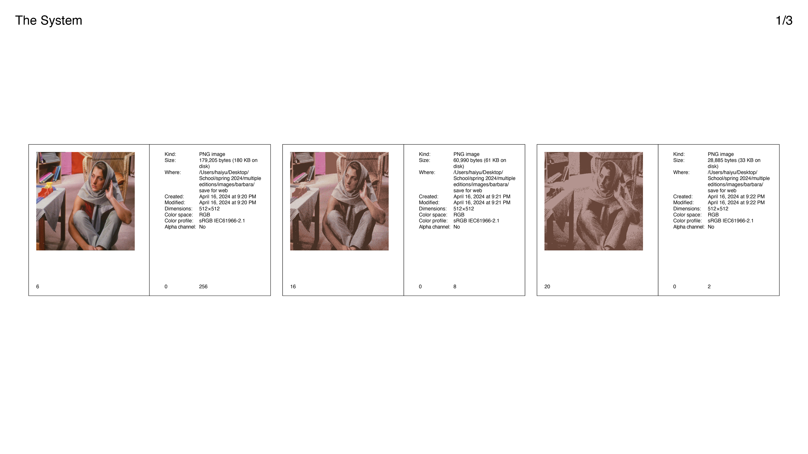
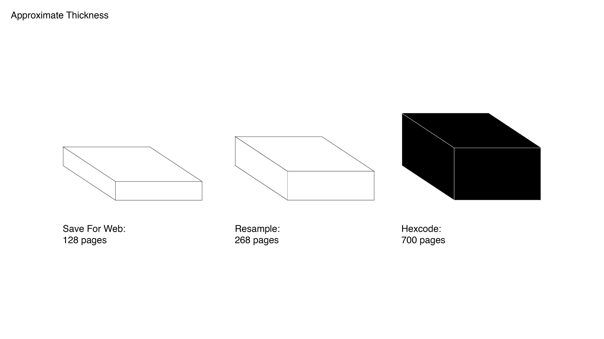
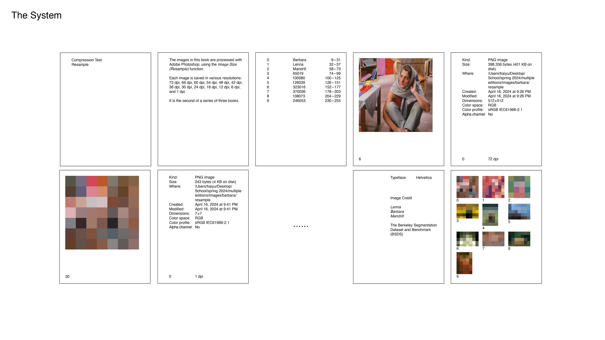
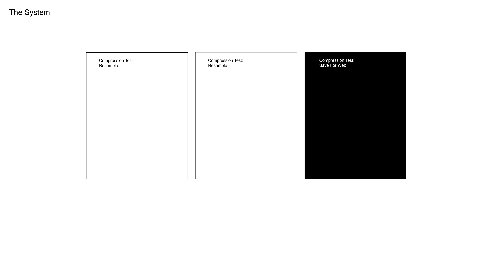
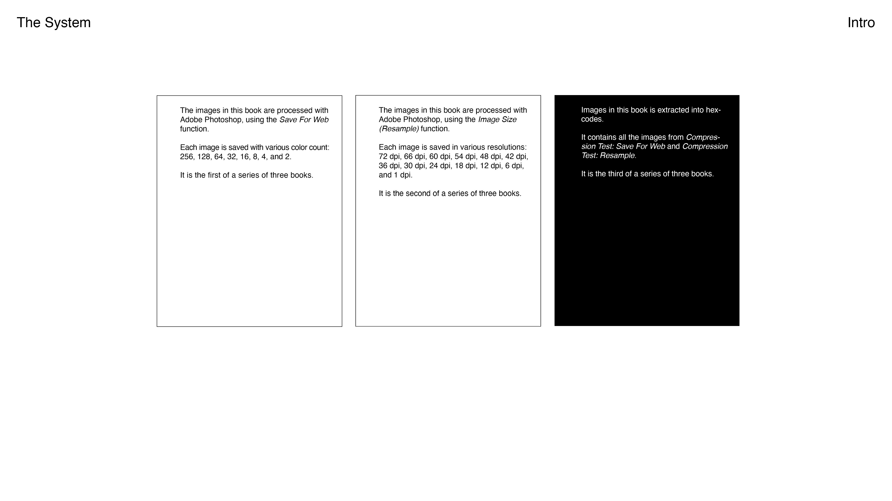
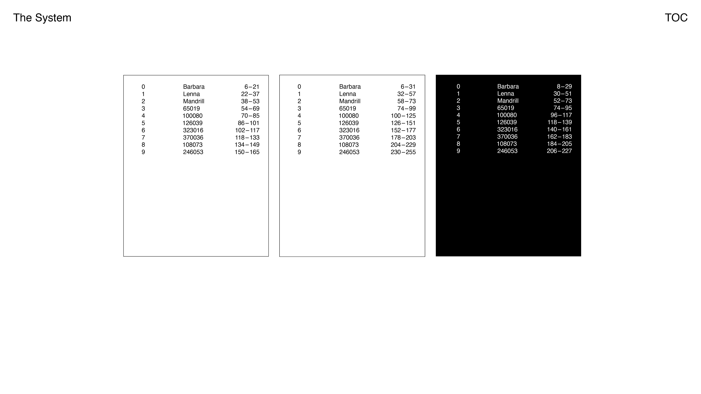
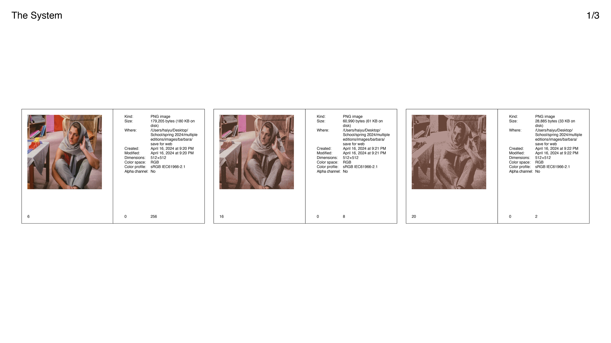